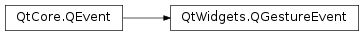

QGestureEvent¶
Note
This class was introduced in Qt 4.6.
Synopsis¶
Functions¶
- def
accept(arg__1) - def
accept(arg__1) - def
activeGestures() - def
canceledGestures() - def
gesture(type) - def
gestures() - def
ignore(arg__1) - def
ignore(arg__1) - def
isAccepted(arg__1) - def
isAccepted(arg__1) - def
mapToGraphicsScene(gesturePoint) - def
setAccepted(arg__1, arg__2) - def
setAccepted(arg__1, arg__2) - def
setWidget(widget) - def
widget()
Detailed Description¶
The
PySide2.QtWidgets.QGestureEventclass provides the description of triggered gestures.The
PySide2.QtWidgets.QGestureEventclass contains a list of gestures, which can be obtained using thePySide2.QtWidgets.QGestureEvent.gestures()function.The gestures are either active or canceled. A list of those that are currently being executed can be obtained using the
PySide2.QtWidgets.QGestureEvent.activeGestures()function. A list of those which were previously active and have been canceled can be accessed using thePySide2.QtWidgets.QGestureEvent.canceledGestures()function. A gesture might be canceled if the current window loses focus, for example, or because of a timeout, or for other reasons.If the event handler does not accept the event by calling the generic
QEvent.accept()function, all individualPySide2.QtWidgets.QGestureobject that were not accepted and in theQt.GestureStartedstate will be propagated up the parent widget chain until a widget accepts them individually, by callingQGestureEvent.accept()for each of them, or an event filter consumes the event.
Further Reading¶
For an overview of gesture handling in Qt and information on using gestures in your applications, see the Gestures in Widgets and Graphics View document.
-
class
PySide2.QtWidgets.QGestureEvent(gestures)¶ Parameters: gestures – Creates new
PySide2.QtWidgets.QGestureEventcontaining a list ofgestures.
-
PySide2.QtWidgets.QGestureEvent.accept(arg__1)¶ Parameters: arg__1 – PySide2.QtCore.Qt.GestureTypeSets the accept flag of the given
gestureType, the equivalent of callingsetAccepted(gestureType, true).Setting the accept flag indicates that the event receiver wants the gesture. Unwanted gestures may be propagated to the parent widget.
See also
-
PySide2.QtWidgets.QGestureEvent.accept(arg__1) Parameters: arg__1 – PySide2.QtWidgets.QGestureSets the accept flag of the given
gestureobject, the equivalent of callingsetAccepted(gesture, true).Setting the accept flag indicates that the event receiver wants the gesture. Unwanted gestures may be propagated to the parent widget.
See also
-
PySide2.QtWidgets.QGestureEvent.activeGestures()¶ Return type: Returns a list of active (not canceled) gestures.
-
PySide2.QtWidgets.QGestureEvent.canceledGestures()¶ Return type: Returns a list of canceled gestures.
-
PySide2.QtWidgets.QGestureEvent.gesture(type)¶ Parameters: type – PySide2.QtCore.Qt.GestureTypeReturn type: PySide2.QtWidgets.QGestureReturns a gesture object by
type.
-
PySide2.QtWidgets.QGestureEvent.gestures()¶ Return type: Returns all gestures that are delivered in the event.
-
PySide2.QtWidgets.QGestureEvent.ignore(arg__1)¶ Parameters: arg__1 – PySide2.QtWidgets.QGestureClears the accept flag parameter of the given
gestureobject, the equivalent of callingsetAccepted(gesture, false).Clearing the accept flag indicates that the event receiver does not want the gesture. Unwanted gestures may be propagated to the parent widget.
See also
-
PySide2.QtWidgets.QGestureEvent.ignore(arg__1) Parameters: arg__1 – PySide2.QtCore.Qt.GestureTypeClears the accept flag parameter of the given
gestureType, the equivalent of callingsetAccepted(gesture, false).Clearing the accept flag indicates that the event receiver does not want the gesture. Unwanted gestures may be propgated to the parent widget.
See also
-
PySide2.QtWidgets.QGestureEvent.isAccepted(arg__1)¶ Parameters: arg__1 – PySide2.QtCore.Qt.GestureTypeReturn type: PySide2.QtCore.boolReturns
trueif the gesture of typegestureTypeis accepted; otherwise returnsfalse.
-
PySide2.QtWidgets.QGestureEvent.isAccepted(arg__1) Parameters: arg__1 – PySide2.QtWidgets.QGestureReturn type: PySide2.QtCore.boolReturns
trueif thegestureis accepted; otherwise returnsfalse.
-
PySide2.QtWidgets.QGestureEvent.mapToGraphicsScene(gesturePoint)¶ Parameters: gesturePoint – PySide2.QtCore.QPointFReturn type: PySide2.QtCore.QPointFReturns the scene-local coordinates if the
gesturePointis inside a graphics view.This functional might be useful when the gesture event is delivered to a
PySide2.QtWidgets.QGraphicsObjectto translate a point in screen coordinates to scene-local coordinates.See also
QPointF.isNull()
-
PySide2.QtWidgets.QGestureEvent.setAccepted(arg__1, arg__2)¶ Parameters: - arg__1 –
PySide2.QtCore.Qt.GestureType - arg__2 –
PySide2.QtCore.bool
Sets the accept flag of the given
gestureTypeobject to the specifiedvalue.Setting the accept flag indicates that the event receiver wants to receive gestures of the specified type,
gestureType. Unwanted gestures may be propagated to the parent widget.By default, gestures in events of type
QEvent.Gestureare accepted, and gestures inQEvent.GestureOverrideevents are ignored.For convenience, the accept flag can also be set with
accept(gestureType), and cleared withignore(gestureType).- arg__1 –
-
PySide2.QtWidgets.QGestureEvent.setAccepted(arg__1, arg__2) Parameters: - arg__1 –
PySide2.QtWidgets.QGesture - arg__2 –
PySide2.QtCore.bool
Sets the accept flag of the given
gestureobject to the specifiedvalue.Setting the accept flag indicates that the event receiver wants the
gesture. Unwanted gestures may be propagated to the parent widget.By default, gestures in events of type
QEvent.Gestureare accepted, and gestures inQEvent.GestureOverrideevents are ignored.For convenience, the accept flag can also be set with
accept(gesture), and cleared withignore(gesture).- arg__1 –
-
PySide2.QtWidgets.QGestureEvent.setWidget(widget)¶ Parameters: widget – PySide2.QtWidgets.QWidgetSets the widget for this event to the
widgetspecified.
-
PySide2.QtWidgets.QGestureEvent.widget()¶ Return type: PySide2.QtWidgets.QWidgetReturns the widget on which the event occurred.
© 2018 The Qt Company Ltd. Documentation contributions included herein are the copyrights of their respective owners. The documentation provided herein is licensed under the terms of the GNU Free Documentation License version 1.3 as published by the Free Software Foundation. Qt and respective logos are trademarks of The Qt Company Ltd. in Finland and/or other countries worldwide. All other trademarks are property of their respective owners.